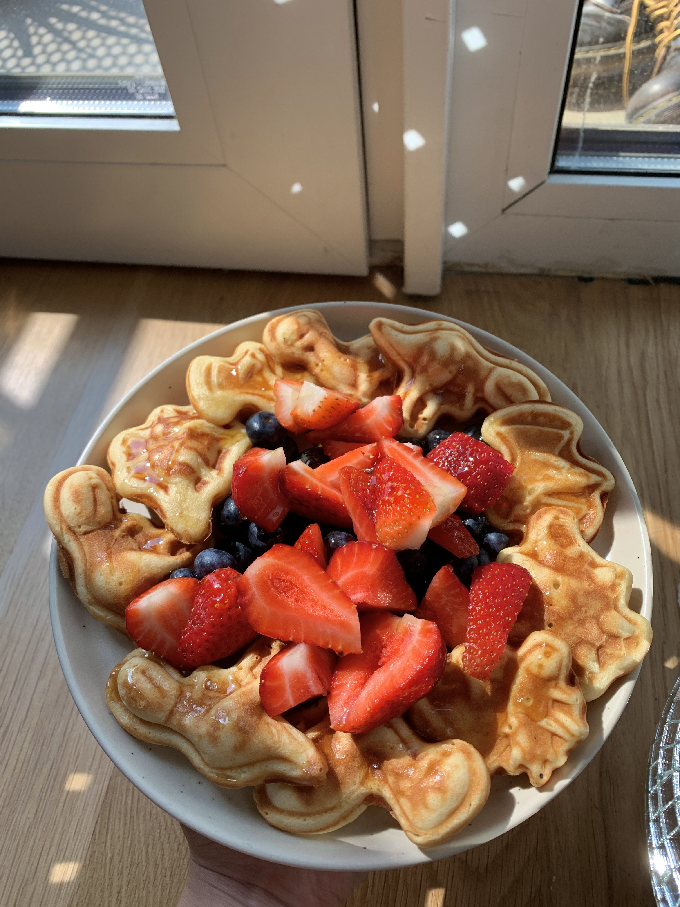

me and 2 of my friends moved into a new apartment in july 2022 and we were shopping and buying a bunch of stuff for the new place. joce (one of my roommates) was looking at sale section of urban outfitters and came across this dino waffle maker. it was selling at a pretty decent price and it's so cute & fun, i mean a dino waffle maker!!! so we decided to buy it and here we are making dino waffles 🦖

main
makes 11 dinos | total time: 30 minutes
DINO WAFFLES
ingredients
- 1½ tbsp unsalted butter
- ½ cup all-purpose flour
- ¾ tsp sugar (i just really eyball it)
- ¼ tsp baking powder
- ¼ tsp fine sea salt
- ¼ cup yogurt
- ¼ cup oat milk (or any milk of you choice)
- 1 large egg
method
- preheat dino friends waffle maker
- melt butter in the microwave (or on the stove if you're fancy) & set aside
- in bowl 1, whisk flour, sugar, baking powder & salt together
- in bowl 2, whisk yogurt, milk, melted butter & eggs together
- fold wet ingredients into dry ingredients
- cook waffles until golden and crisp
- eat your face off :)